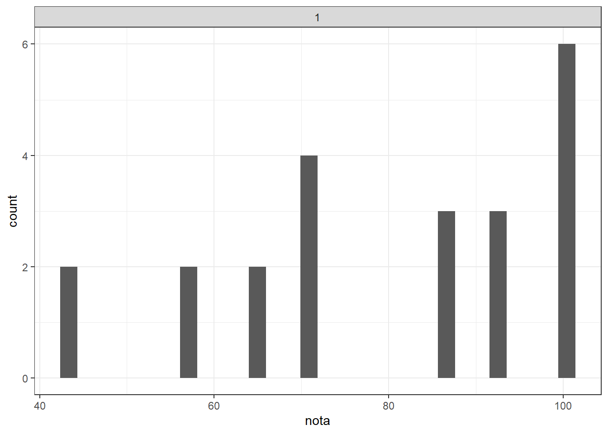
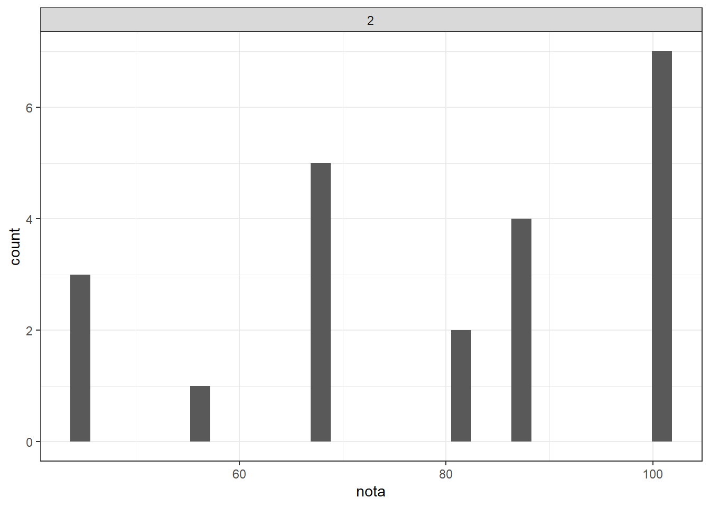
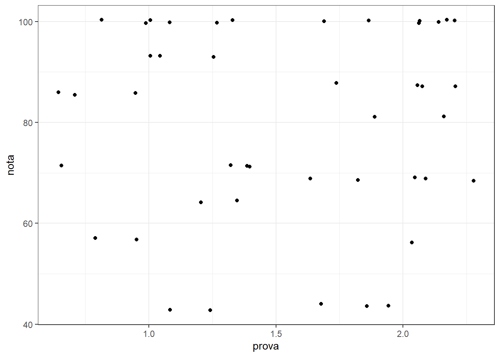
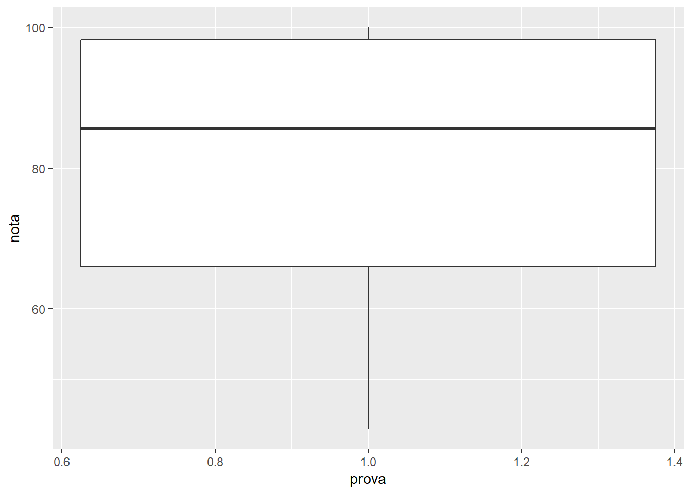
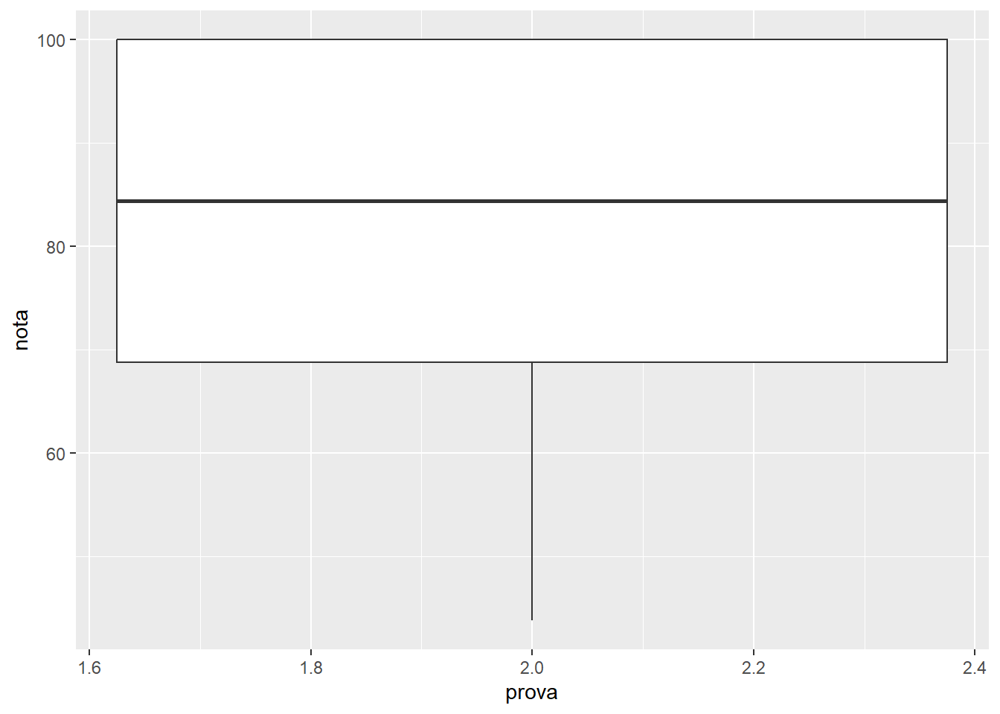
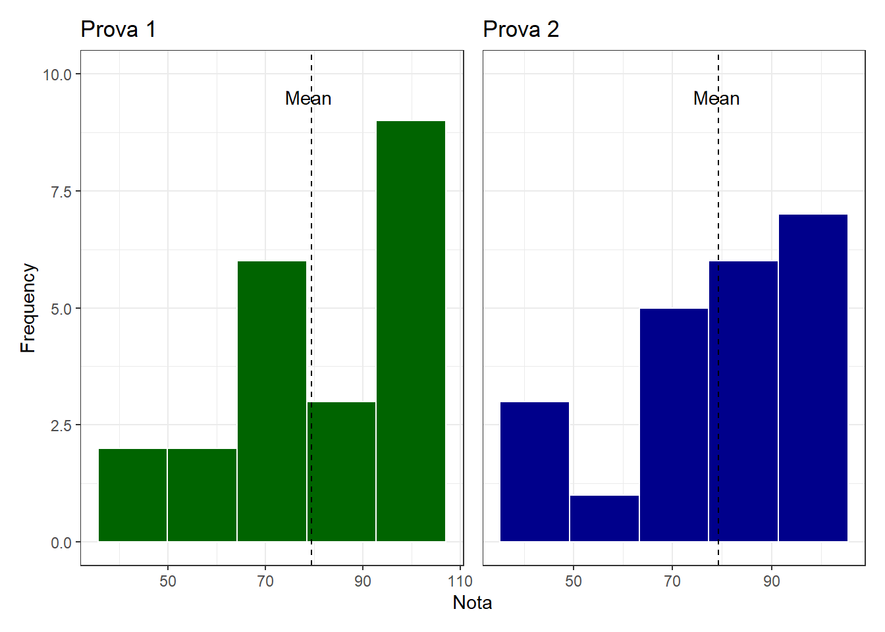
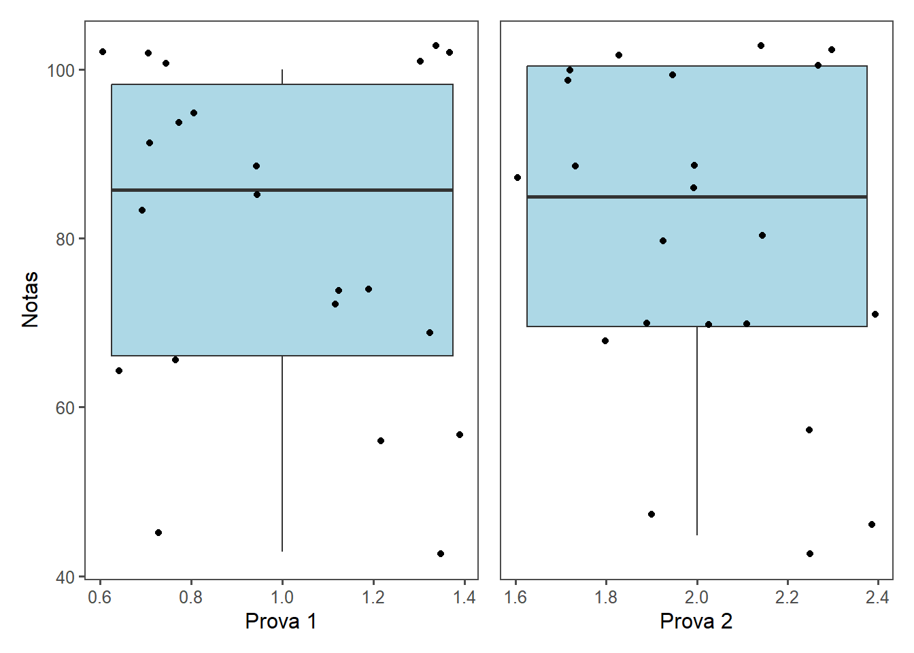
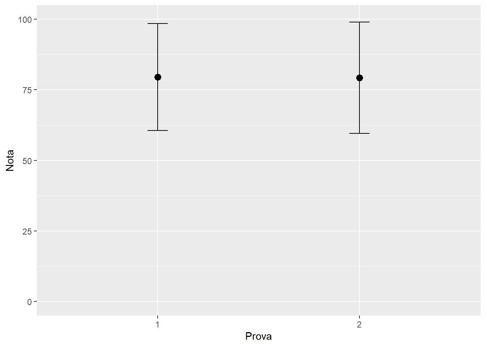

library(gsheet)
sab <- gsheet2tbl("https://docs.google.com/spreadsheets/d/1bq2N19DcZdtax2fQW9OHSGMR0X2__Z9T/edit#gid=1092065531")Aula5
Avaliação do desempenho dos alunos nas sabatinas de FIP606
O documento tem por objtivo descrever e ilustrar o desempenho geral dos estudantes matriculados na disciplina FIP606
Importando os dados
Para importar os dados que iremos trabalhar diretamente da tabela google, devemos utilizar o pacote gsheet e a função gsheet2tb1.
Criando subgrupos
Para separar os dados da primeira e da segunda sabatina, devemos filtrar os dados e criar subconjuntos. Utilizaremos a função filter e criaremos um objeto para cada grupo de dados.
library(tidyverse)── Attaching core tidyverse packages ──────────────────────── tidyverse 2.0.0 ──
✔ dplyr 1.1.4 ✔ readr 2.1.5
✔ forcats 1.0.0 ✔ stringr 1.5.1
✔ ggplot2 3.5.1 ✔ tibble 3.2.1
✔ lubridate 1.9.3 ✔ tidyr 1.3.1
✔ purrr 1.0.2
── Conflicts ────────────────────────────────────────── tidyverse_conflicts() ──
✖ dplyr::filter() masks stats::filter()
✖ dplyr::lag() masks stats::lag()
ℹ Use the conflicted package (<http://conflicted.r-lib.org/>) to force all conflicts to become errorsprova1 <- sab %>%
filter(prova == 1)
prova2 <- sab %>%
filter(prova == 2)Sumarizando os dados
Para obtermos valores de tendência central e dispersão do conjunto de dados, utilizaremos a função summarise para obter os valores de máximo, mínimo, a média amostral, a mediana e o desvio padrão em cada sabatina.
sab %>%
group_by(prova) %>%
summarise(nota_mean = mean(nota),nota_med = median(nota), sd_mean = sd(nota), nota_max = max(nota), min_nota = min(nota))# A tibble: 2 × 6
prova nota_mean nota_med sd_mean nota_max min_nota
<dbl> <dbl> <dbl> <dbl> <dbl> <dbl>
1 1 79.5 85.7 19.0 100 42.9
2 2 79.3 84.4 19.7 100 43.8A média das notas obtidas pelos alunos na sabatina 1 foi de 79,55 e os valores variaram entre 42,90 e 100,00. Os valores encontrados na sabatina 2 foram semelhantes, em que a média amostral foi de 79,26 e os valores variaram entre 43,75 e 100. O desvio padrão de ambas as provas também foi semelhante com valor de 19,00 e 19,71, na primeira e segunda sabatina respectivamente.
Explorando os dados
Para uma análise exploratória inicial e visualização dos dados, utilizarmos o pacote ggplot2 para criarmos diferentes gráficos com os conjuntos de dados.
library (ggplot2)
prova1 %>%
ggplot(aes(nota)) + geom_histogram() +
facet_wrap(~prova) +
theme_bw() `stat_bin()` using `bins = 30`. Pick better value with `binwidth`.
prova2 %>%
ggplot(aes(nota)) + geom_histogram() +
facet_wrap(~prova) +
theme_bw() `stat_bin()` using `bins = 30`. Pick better value with `binwidth`.
sab %>%
ggplot(aes(x = prova , y = nota)) + geom_jitter() +
theme_bw()
prova1 %>%
ggplot(aes(prova, nota)) +
geom_boxplot()
prova2 %>%
ggplot(aes(prova, nota)) +
geom_boxplot()
Customizando os gráficos
Para modificarmos a aparência dos gráficos e demonstrar os dados de forma mais didática e com um maior número de informações, customizaremos o script do desenvolvimento dos gráficos do tipo histograma e boxplot.
library (ggthemes)
#gráficos histograma
pv1 <- prova1 %>%
ggplot(aes(nota)) + geom_histogram(bins = 5,fill = "darkgreen", color = "white", ) +
theme_bw() +
labs( title= "Prova 1",
y = "Frequency",
x = "Nota") +
ylim (0,10) +
geom_vline(xintercept = 79.54545, linetype = "dashed") +
annotate(geom = "text",
x = 79, y = 9.5,
label = "Mean")
pv2 <- prova2 %>%
ggplot(aes(nota)) + geom_histogram(bins = 5, fill = "darkblue", color = "white",) +
theme_bw() +
labs( title = "Prova 2",
y = "Frequency",
x = "Nota") +
ylim (0,10) +
geom_vline(xintercept = 79.26136, linetype = "dashed") +
annotate(geom = "text",
x = 79, y = 9.5,
label = "Mean")#gráficos boxplot
pv12 <- prova1 %>%
ggplot(aes(nota, prova)) +
geom_boxplot(fill = "lightblue") +
geom_jitter() +
coord_flip() +
theme_few() +
labs (x = "Notas",
y = "Prova 1")
pv22 <- prova2 %>%
ggplot(aes(nota, prova)) +
geom_boxplot(fill = "lightblue") +
geom_jitter() +
coord_flip() +
theme_few() +
labs (x = "Notas",
y = "Prova 2")Juntando os gráficos
Para obter os dois gráficos gerados de cada formato em apenas uma imagem, utilizaremos o pacote patchork.
library (patchwork)
(pv1 + pv2) +
plot_layout(guides = "collect",
axes = "collect")
Podemos observar, pelos gráficos do tipo histograma, que a distribuição das notas dos alunos não apresenta uma distribuição normal.
(pv12 + pv22) +
plot_layout(guides = "collect",
axes = "collect") 
Podemos observar, pelo gráfico do tipo boxplot, que a mediana das notas de cada sabatina foram próximas e que a maioria das notas alcançaram o mínimo de 60 pontos.
Gráfico de barras de erro
Para visualizar a variabilidade do conjunto de dados, podemos utilizar uma barra de erro da média amostral em relação ao desvio padrão
sab %>%
group_by(prova) %>%
summarise(nota_mean = mean(nota),
nota_sd = sd(nota)) %>%
ggplot(aes(factor(prova), nota_mean)) +
geom_point(size = 3) +
geom_errorbar(aes(ymin = nota_mean - nota_sd,
ymax = nota_mean + nota_sd),
width = 0.1) +
ylim(0,100) +
labs (x = "Prova",
y = "Nota")
Pelo gráfico de barra de erro, podemos perceber que houve uma elevada variabilidade em ambos conjuntos de dados e que esse erro foi similar em ambas sabatinas.
Conclusão
O desempenho dos estudantes matriculados na disciplina FIP606 foi satisfatório para a maioria dos alunos em ambas as sabatinas e as médias das notas foram elevadas. No entanto, as notas se apresentaram distribuidas irregulamente e houve uma elevada variabilidade.